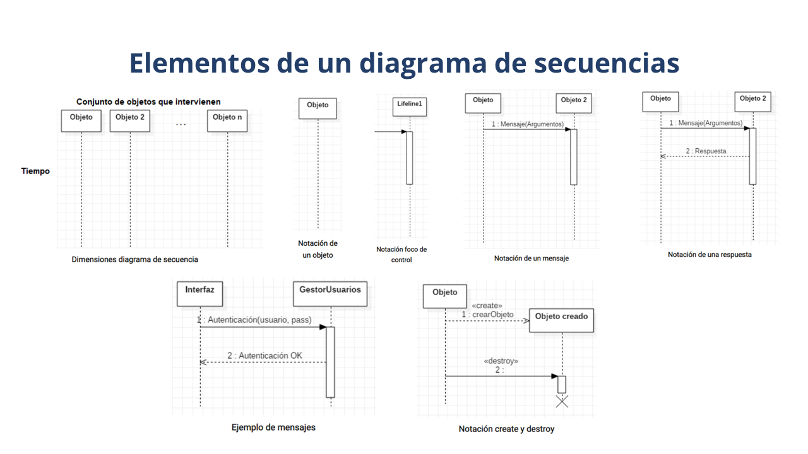
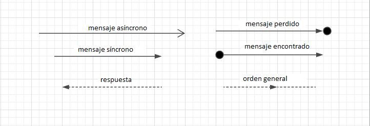

Elementos o Partes de un Diagrama de Secuencias:
Objetos: Representan las instancias de las clases que participan en la interacción. Se representan con rectángulos con el nombre del objeto seguido de dos puntos y el nombre de la clase entre paréntesis.
Mensajes: Representan la comunicación entre los objetos y se muestran con flechas dirigidas de un objeto a otro. Pueden ser mensajes síncronos (llamadas de método), asíncronos (mensajes que se envían pero no se espera una respuesta inmediata), de retorno (respuestas a mensajes anteriores) o de creación (para la creación de nuevos objetos).
Activaciones: Representan el período de tiempo durante el cual un objeto está activo y ocupado realizando una tarea. Se muestran como cajas verticales debajo de los objetos que muestran la duración de la actividad.
Fragmentos de Interacción: Permiten representar estructuras de control, como bucles, condiciones y opciones, dentro del diagrama de secuencia. Los fragmentos se utilizan para modelar comportamientos más complejos y condicionales.
Simbología de líneas:

Usos y Beneficios de los Diagramas de Secuencias:
Visualización de Interacciones entre Objetos
Permiten visualizar y comprender las interacciones entre objetos en un sistema en un nivel detallado.
Análisis del Comportamiento del Sistema
Facilitan el análisis del comportamiento dinámico del sistema, mostrando cómo los objetos interactúan entre sí a lo largo del tiempo.
Identificación de Casos de Uso y Requisitos
Ayudan a identificar y definir casos de uso y requisitos del sistema al modelar las interacciones entre los diferentes componentes del sistema.
Detección de Errores de Diseño
Permiten detectar posibles errores de diseño o inconsistencias en la interacción entre objetos antes de la implementación del sistema.